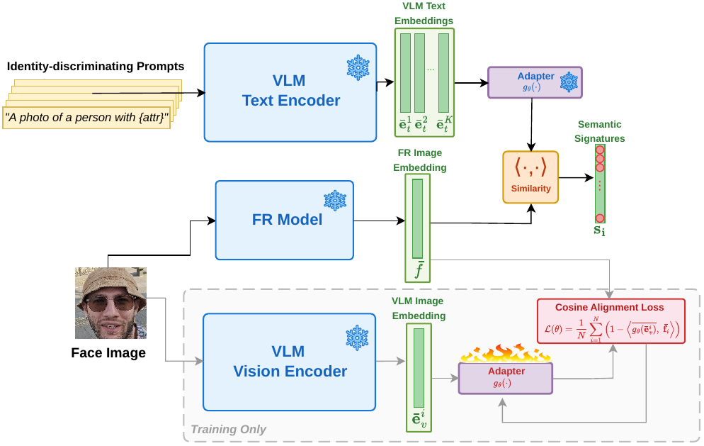
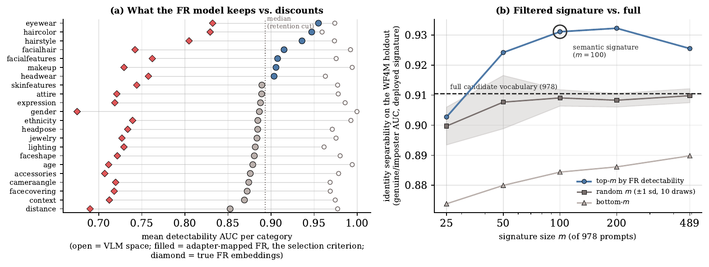

ECCV 2026 Workshops
1Fraunhofer IGD, Darmstadt · 2Technische Universität Darmstadt
A deployed face recognition model returns a similarity score and no reason for it. EXPL-FR reads which named attribute that score relied upon directly off the frozen matcher's own embedding space, not off a separate commentator. A ~1M-parameter adapter, trained on face images alone and never on text, turns any written prompt into a direction in FR space; cosine similarities to those directions form a face's semantic signature.
Align the VLM image encoder with a frozen FR encoder on images alone; the text encoder inherits the mapping, so every written prompt becomes an anchor in FR space.

Figure 1. The adapter is the only learned component (~1M parameters).
Pick a verification pair, then drag the blend slider: the differential signature grows from reference minus reference (flat) toward reference minus compared.
Differential signature · reference − genuine
Figure 2. Per-image and differential explanations on a morph case. The reference-genuine difference is near-flat; the morph residual names inherited attributes. The values shown are illustrative.
One bar per prompt, read off the FR model's own embedding space.
A VLM and an FR encoder are trained separately. Their embeddings live in unrelated coordinate systems, so cross-encoder verification sits at chance until the adapter bridges them.
prompt anchors face embeddings
| Representation pair | Mean (%) |
|---|---|
| FR self-verification (upper bound) | 97.44 |
| VLM self-verification | 82.33 |
| Aligned-VLM self-verification | 92.58 |
| Unaligned cross-encoder | 50.29 |
| Aligned cross-encoder (ours) | 94.56 |
| Vocabulary projection, in VLM space | 51.98 |
| Vocabulary projection, in FR space (ours) | 71.66 |
Within 2.88 points of the FR ceiling; vocabulary projection gains +19.68 when moved from VLM space into FR space.
Eyewear, hair colour and facial hair come through into FR space; distance, scene context and lighting are discounted.

Figure 3. The 100 most detectable prompts separate identities better than the full vocabulary.
Sec. 3.5 builds the same FR-space attribute axis three ways, with decreasing supervision. Right column: cost of extending the audit by one new attribute.
Supplementary Fig. S1. Supervision levels for attribute-level FR auditing.
Figure 4. Label-free dependence vs. real verification error (τ = 0.92).
| Finding | Statistic | Against |
|---|---|---|
| Ethnicity dependence vs. per-group error (RFW) | τ = 0.92 | real ten-fold verification error |
| Matched-axis sensitivity vs. per-attribute EER (GAN-Control) | ρ = 0.90 / 0.83 / 0.95 | labeled / VLM-proxy / prompt-only axes |